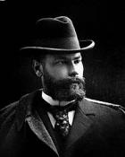
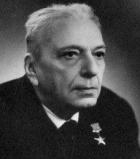

Олексій Миколайович
Бекетов
1862-1941
Видатний архітектор.
За проектами О.М.Бекетова у Харкові споруджено більше 40 будинків, завдяки йому, за словами фахівців, Харків з провінційного міста перетворився на європейський центр.
На честь О.М. Бекетова названа станція Харківського метрополітена, вулиця в районі ХТЗ, у 2007 році йому відкрито пам'ятник (вул.Сумська, перед ХІСІ)

Микола Павлович
Барабашов
1894 - 1971
Видатний український астроном, академік АН України
М.П.Барабашов закінчив Харківський університет, з 1930 р. був директором Астрономічної обсерваторії Харківського університету, з 1933 — професор Харківського університету, пізніше - ректор.
Завдяки М.П.Барабашову у Харкові у 1957 році було відкрито планетарій.
Іменем Барабашова названо малу планету № 2883 та кратер на Марсі.
На честь Барабашова названа станція "Академіка Барабашова" харківського метрополітену, а по станції названий найбільший у Східній Україні ринок Барабашова.